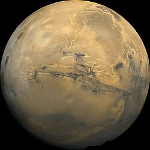
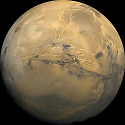

Najbliższa Słońcu planeta, pozbawiona atmosfery i pokryta kraterami. Dzień na Merkurym trwa 59 ziemskich dni, a temperatury wahają się od -180°C w nocy do +430°C w dzień. Ze względu na bliskość Słońca jest najszybszą planetą w Układzie Słonecznym.